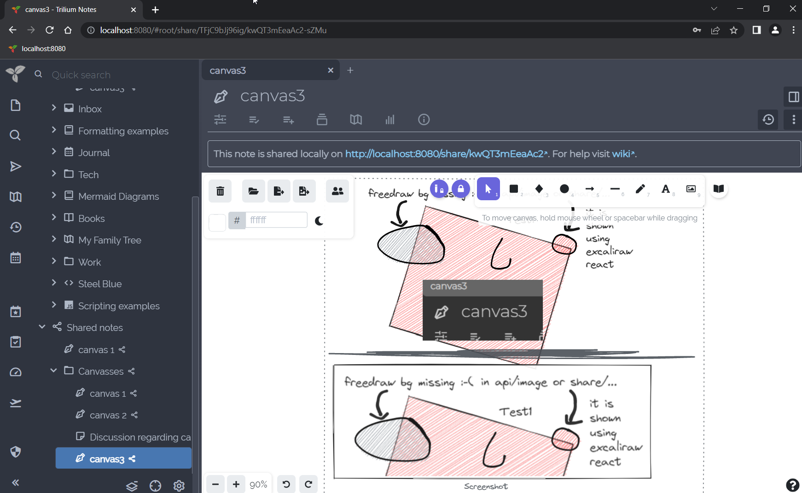

Canvas notes use the Excalidraw library to allow handwritten notes with mouse, pen or touch on an infinite canvas. It also supports basic diagramming, text and graphics input.
Since v0.104.0, Canvas supports embedding notes in a similar fashion to the Include Note functionality for Text notes.
To embed a note:
root/MujWAc9fQ1nj).Embedding notes in the canvas follows the same rules as Include Note: some notes are rendered as images (e.g. Mind Map), whereas some render fully interactive such as Collections.
To draw inside a Text note instead of in a note of its own, insert a drawing canvas with Drawing canvas in the Insert menu. See Drawing canvases in Include Note.